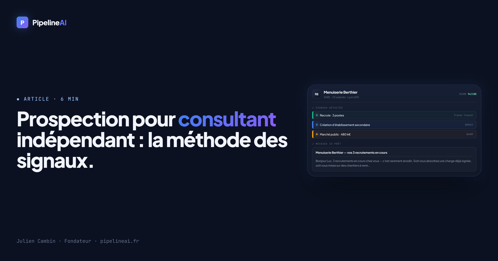

Prospection pour consultant indépendant : la méthode des signaux

Quand on est consultant indépendant, le paradoxe est connu : tant qu'on est en mission, on ne prospecte pas — et le jour où la mission s'arrête, le pipeline est vide. La prospection devient une urgence subie, pas une habitude. Et comme ce n'est ni le cœur de votre métier ni votre moment préféré de la semaine, elle passe toujours après le reste.
Le problème n'est pas le manque d'entreprises à contacter — il y en a des milliers. C'est de savoir lesquelles ont besoin de vous maintenant. Voici une méthode concrète pour arrêter de démarcher dans le vide : la prospection par signaux.
Pourquoi la prospection « classique » marche mal pour un consultant
Le réflexe habituel : acheter une liste, ou scroller LinkedIn, et envoyer le même message à 200 entreprises « qui correspondent à peu près ». Résultat : 1 à 2 % de réponses, beaucoup d'énergie pour peu de retours, et l'impression de déranger.
Le vrai problème, c'est le timing. Une PME n'a pas besoin d'un consultant en organisation, en RH, en finance ou en stratégie commerciale en permanence — elle en a besoin à un moment précis : quand elle grandit, quand elle se réorganise, quand elle décroche un gros contrat. Si vous frappez à ce moment-là, vous n'êtes plus un démarcheur : vous êtes la bonne personne au bon moment.
C'est quoi un « signal » ?
Un signal, c'est un événement public et récent qui révèle qu'une entreprise est en train de bouger — et donc qu'elle a probablement un besoin. Pour un consultant, les signaux les plus parlants sont :
- Recrutement : une PME qui ouvre plusieurs postes vit une phase de croissance → besoins en structuration, en RH, en process, en management.
- Création ou nouvel établissement : une entreprise jeune doit tout mettre en place → idéal pour un accompagnement stratégie, commercial ou administratif.
- Marché public remporté : signe de croissance et de trésorerie → un budget existe pour se faire accompagner.
- Changement de dirigeant ou de structure : une réorganisation appelle souvent un regard extérieur.
Ces informations sont publiques : elles viennent des registres officiels français (INSEE/Sirene, France Travail, BODACC, marchés publics). En les croisant, vous identifiez des entreprises qui ont un besoin actuel, avec le nom du dirigeant à contacter et une accroche évidente.
Pourquoi cette méthode est faite pour les consultants
Contrairement à un produit standardisé, le conseil se vend sur la pertinence du moment et la confiance. Un message qui démarre par « j'ai vu que vous ouvrez 3 postes » prouve immédiatement que vous avez fait l'effort de comprendre la situation de l'entreprise. Vous ne vendez pas « du conseil » — vous proposez une réponse à un mouvement réel et observable.
Et surtout : vous concentrez votre temps (rare quand on est seul) sur les 10 bonnes entreprises plutôt que sur 200 contacts froids.
Et si ces prospects vous étaient livrés, message inclus ?
C'est exactement ce que fait PipelineAI : il détecte les PME de votre zone et de votre secteur qui viennent de bouger, identifie le décideur, et génère un message de prise de contact personnalisé — prêt à envoyer. Vous arrêtez de chercher, vous parlez aux bonnes entreprises.
Testez avec 15 prospects qualifiés pour 9,90 € (paiement unique, sans engagement).
Obtenir mes 15 leads → 9,90 €La méthode en 4 étapes
- Clarifiez votre offre et votre client idéal : quel problème réglez-vous, pour quel type d'entreprise (taille, secteur), dans quelle zone ?
- Repérez les signaux : entreprises qui recrutent, se créent ou gagnent des marchés dans vos critères (manuellement via les registres, ou automatiquement avec un outil dédié).
- Personnalisez l'accroche autour du signal : « Bonjour [Prénom], j'ai vu que [entreprise] recrute plusieurs profils — souvent le signe d'une phase de croissance qui demande de structurer. Est-ce un sujet en ce moment ? »
- Soyez régulier : 10 contacts ciblés par semaine, même en pleine mission, valent mieux que 200 d'un coup une fois par trimestre. C'est la régularité qui remplit le pipeline.
Un message ancré sur un signal réel obtient bien plus de réponses qu'un mailing générique — parce qu'il tombe au bon moment et montre que vous avez compris la situation.
En résumé
Pour un consultant indépendant, la prospection efficace n'est pas une question de volume mais de timing. Visez les entreprises qui bougent vraiment, contactez-les avec une accroche liée à leur mouvement, et faites-en une habitude régulière plutôt qu'une urgence subie. C'est le meilleur rapport temps/résultats quand on est seul à tout gérer.
À lire aussi : Comment trouver des clients quand on est une agence web.
Gardez votre pipeline plein, même en mission.
PipelineAI vous livre chaque mois des PME en mouvement, avec décideur nommé et message prêt à envoyer. 15 leads pour 9,90 €, sans engagement.
Démarrer ma prospection →